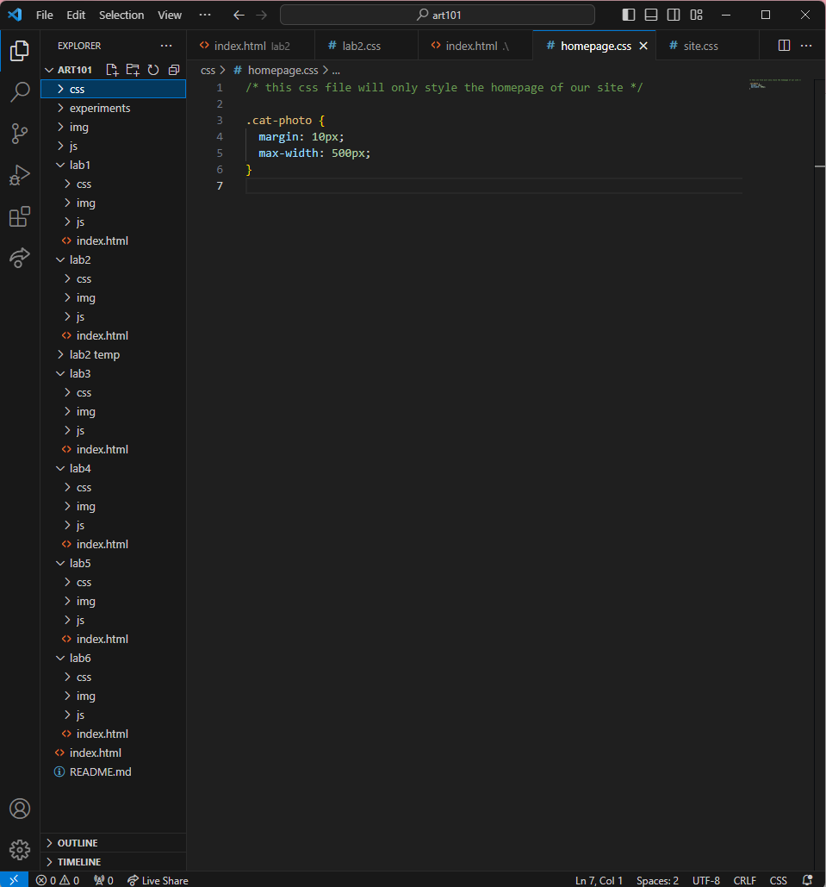
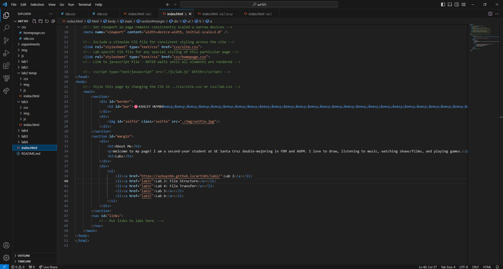
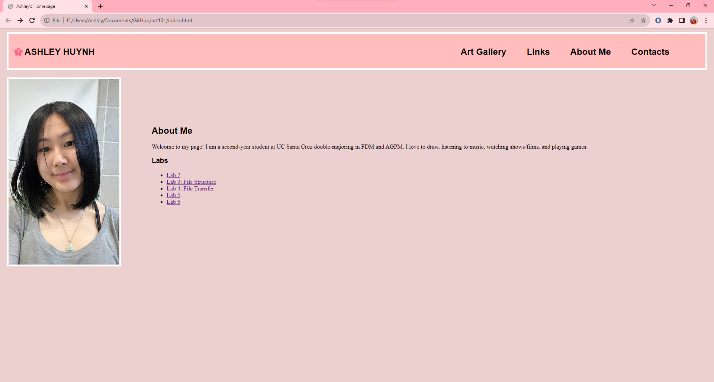
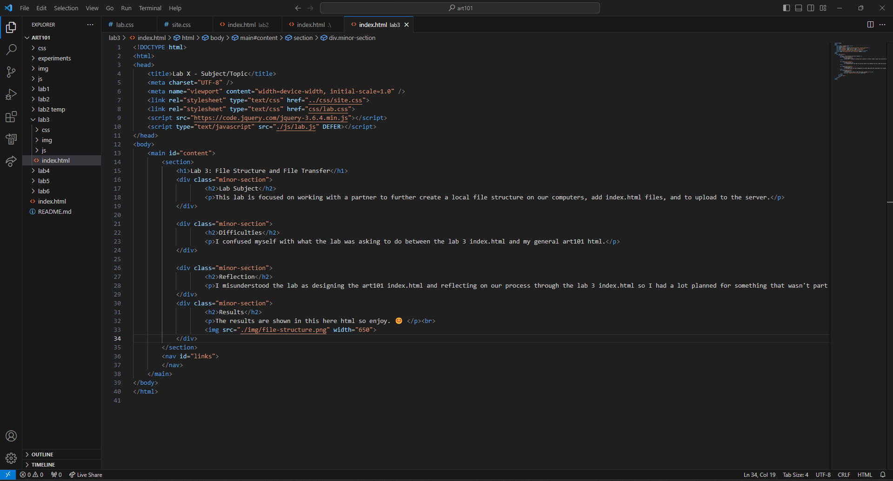
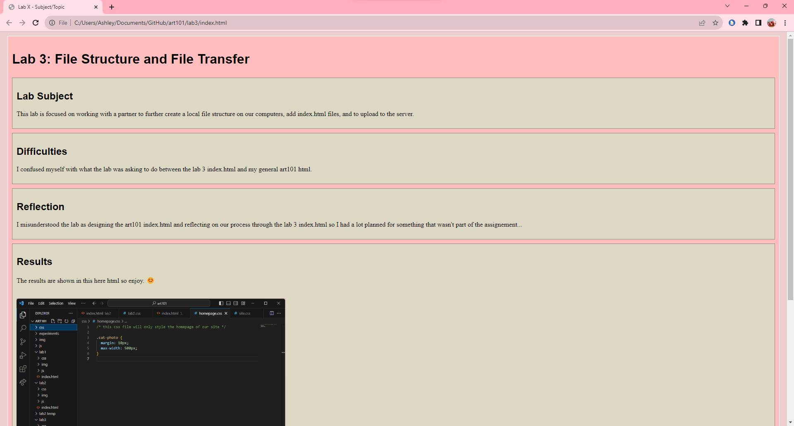

Lab 3: File Structure and File Transfer
Lab Subject
This lab is focused on working with a partner to further create a local file structure on our computers, add index.html files, and to upload to the server.
Difficulties
I confused myself with what the lab was asking to do between the lab 3 index.html and my general art101 html.
Reflection
I misunderstood the lab as designing the art101 index.html and reflecting on our process through the lab 3 index.html so I had a lot planned for something that wasn't part of the assignement...
Results
The results are shown in this here html so enjoy. 😊

Screenshots
Art101 HTML Source Code
art101/index.html as it appears in my browser
Lab 3 HTML Source Code
art101/lab3/index.html as it appears in my browser